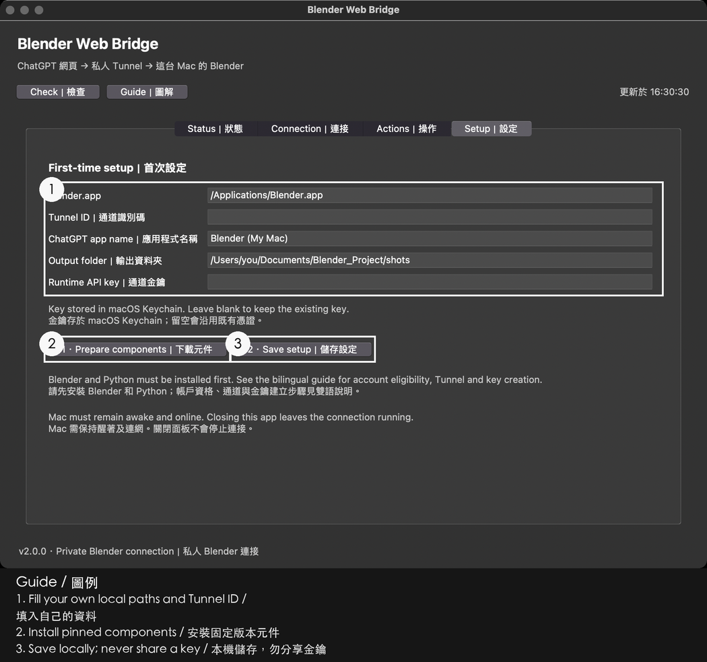
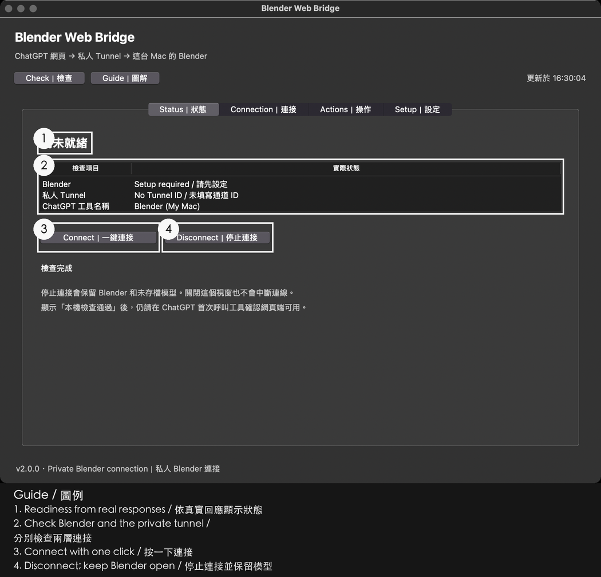
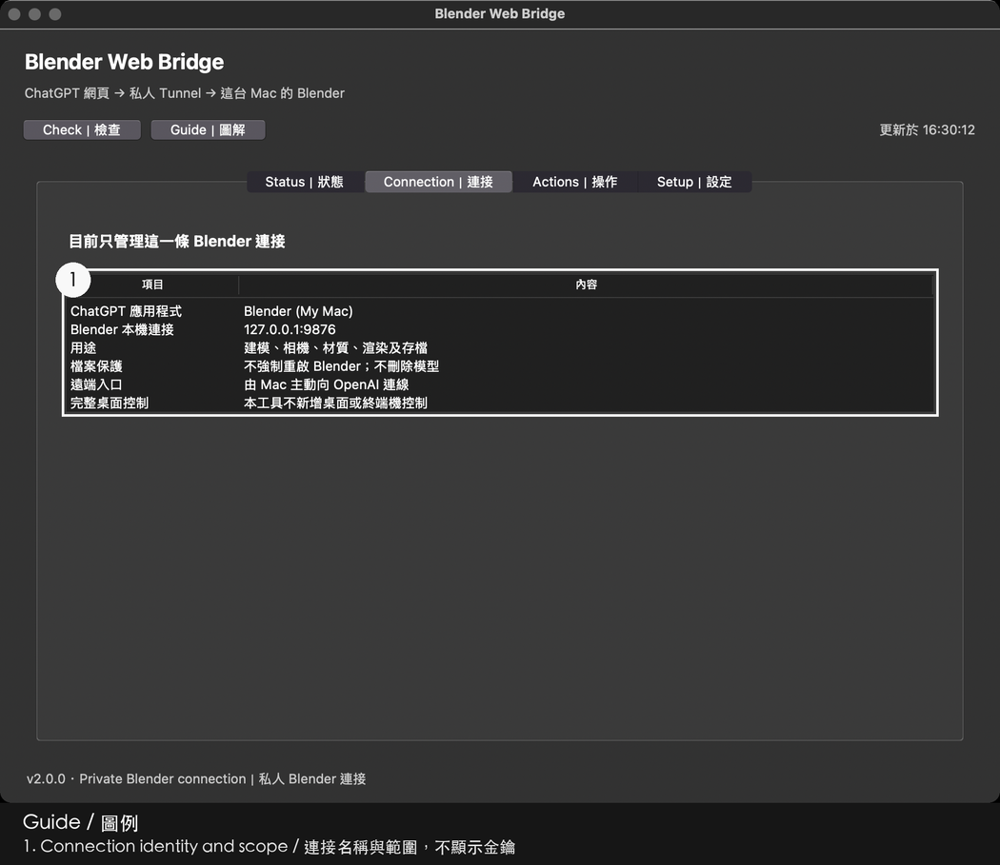
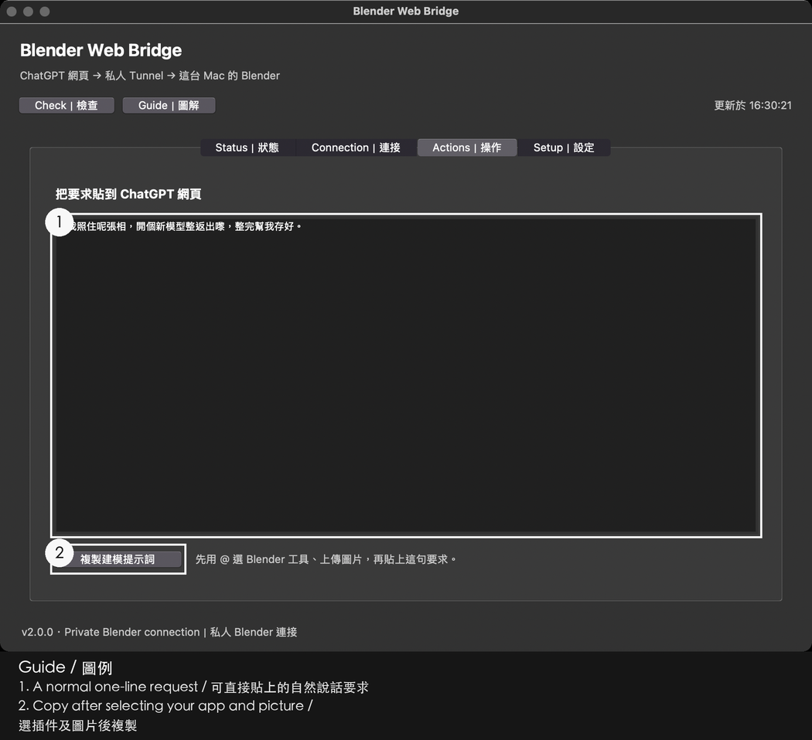

2.0.1-rc2 review candidate / 審核候選版。 The original pictures are present and approved for public distribution. The flow below is a schematic, not a live UI capture.
原圖已齊備並獲准公開發佈。下圖是流程示意，不是實機介面截圖。
Install Blender and Python 3.10+ with Tk first; Python 3.11+ is recommended. Read the source, then double-click Install.command. No sudo, services or account creation are used by installation.
先備妥 Blender 和 Python/Tk，再雙擊安裝。更新前只停止通道並關閉面板；不要關閉或清空使用中的 Blender。
Open Setup. Supply your existing Tunnel ID, app name, Blender.app location and output directory. Existing identity/key bindings are immutable in this candidate. Never paste a key into ChatGPT, a screenshot or a public issue. A new configuration may store an already-created runtime key in Keychain; the tool does not create one.
首次設定填自己的既有通道及本機路徑。現用身份及憑證綁定不會更改；不要把金鑰放在對話、截圖或公開問題內。
Save and close Blender and stop the tunnel before Prepare components. It downloads pinned components, backs up your regular Blender add-on and preferences, then installs and enables the add-on there. It refuses any open Blender session.
準備元件前先儲存並關閉 Blender，再停止通道。程式會備份日常 Blender 的插件及偏好，然後安裝並啟用新版插件；不會代你關閉正在運行的 Blender。
If an older install keeps reopening Blender, save the scene, Stop the tunnel, and confirm the Setup action “Disable old Blender auto-restart” before Prepare components.
由舊版升級而 Blender 仍會重開時，先儲存場景、停止通道，再於設定頁確認「停用舊版 Blender 自動重開」，然後才準備元件。

Press Connect once. Repeated clicks do not restart a running tunnel. Local readiness alone is not success. Missing/stale metrics mean unknown; later failures revoke normal. A region-policy 403 is displayed without VPN changes, key recreation or restart loops.
按一次連接，逐層查看。通道程序正常不等於雲端或網頁正常。資料不明就顯示未知；收到地區 403 時如實提示，不切换網絡或重新建立身份。

Select your existing Blender app in ChatGPT. Ask for two read-only get_scene_info calls. Check the actual scene name and object count, record any approval or failure, and only then record the observation in the Web acceptance tab. Evidence is owner-reported, not an automatic account check.
在 ChatGPT 選自己的 App，要求兩次唯讀查詢。核對場景名稱、物件數、批准及失敗，才在面板記錄。五分鐘後或觀察到斷線即需重新驗收；重開面板亦不沿用舊成功。

A normal request may be: “Make a new model from this picture and save it separately.” This English line is an illustrative translation, not a separately tested run. Always preserve existing scenes and use unique filenames. A lost modeling reply does not prove the operation failed; inspect before retrying.
已保存的真實案例原句：「幫我照住呢張相，開個新模型整返出嚟，整完幫我存好。」先保留舊場景，以新檔名存檔。回覆遺失不代表未執行，勿自動重試。
Stop affects only the tunnel and persists across login. Closing the panel leaves a running tunnel alone.
停止只處理通道，下次登入保持停止；單純關閉面板不會斷線。

Historical cases / 歷史案例 · Troubleshooting / 排錯 · Unexecuted hardware gates / 未執行實機驗收